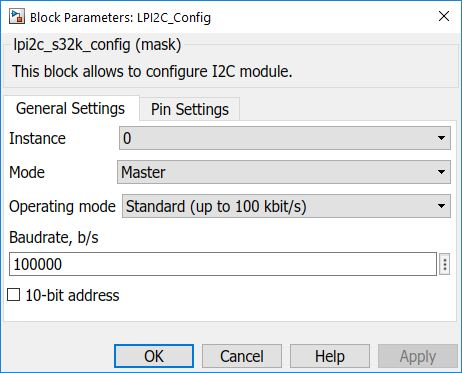
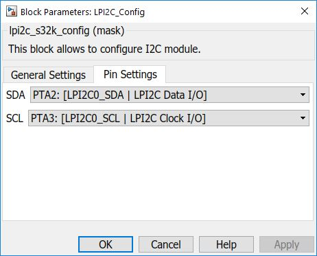

LPI2C Configuration Block
This block is used to configure the I2C module.
Block Image

Inputs:
- None
Outputs:
- None
Parameters and Dialog Box
The block dialog consists of the following tabs:
General
Instance
Select an instance of LPI2C to use (on S32K144 there is only one).
Mode
Select the role (either Master or Slave).
Operating mode
Select the operating mode for LPI2C (on S32K144 only Standard mode is available).
Baud Rate
Select the baud rate for LPI2C (in bps).
10-bit address
Check the box if you want 10-bit addressing; leave it unchecked if you want 7-bit.
Pins
Pins
Select the LPI2C pins to be used from the dropdown list.
Block Dependency
- None
Block Miscellaneous Details
- None